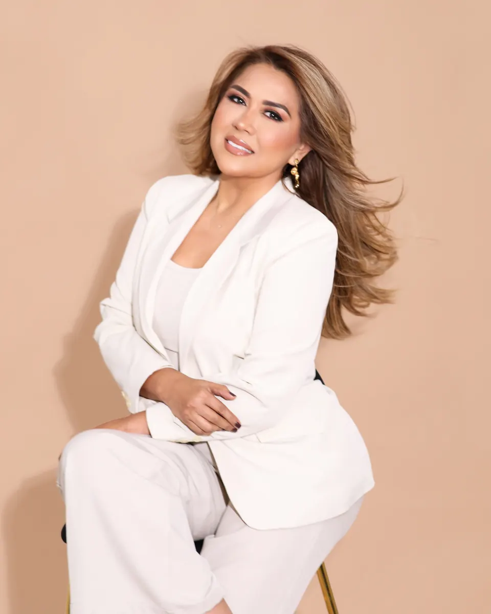

El Universo
Yesenia Vargas y su ‘fábrica de sonrisas’ para las niñas y las mujeres con cáncer
Feature on the Yesenia Vargas Foundation and its handmade natural-hair wigs.
Print edition · Vida & Estilo, p. 22 · Online link: N/A
Her career, her brand and her social work have been covered by Ecuadorian print media since 2011.

El Universo
Feature on the Yesenia Vargas Foundation and its handmade natural-hair wigs.
Print edition · Vida & Estilo, p. 22 · Online link: N/A
Metro Ecuador
Coverage of the brand at the Beauty Fest fair in Guayaquil.
Print edition · Online link: N/A
Mujer · Diario Súper
Profile of her career and her social work.
Print edition · Divina, p. 2 · Online link: N/A
El Universo
Feature on foundations donating wigs; Yesenia Vargas takes part as extension specialist.
Print edition · Labor social, p. 22 · Online link: N/A
Metro Ecuador
Interview on bringing her brand to the United States.
Print edition · Empresarial, p. 8 · Online link: N/A
El Dominguero
Yesenia Vargas's advice on washing and maintaining extensions.
Print edition · Estar guapa, p. 3 · Online link: N/A
Metro Ecuador
Interview about her story as an entrepreneur.
Print edition · Empresarial, p. 12 · Online link: N/A
Mujer · Diario Súper
Profile: from hair salon to a specialist extensions studio.
Print edition · Divina, p. 7 · Online link: N/A
Metro Ecuador
Her growth story and wig-donation campaign.
Print edition · Empresarial, p. 11 · Online link: N/A
TV y Novelas
Yesenia Vargas behind the singer’s new look.
Print edition · pp. 12–13 · Online link: N/A
Only the headline and main image of each article are shown. Rights to texts and photos belong to each publication.